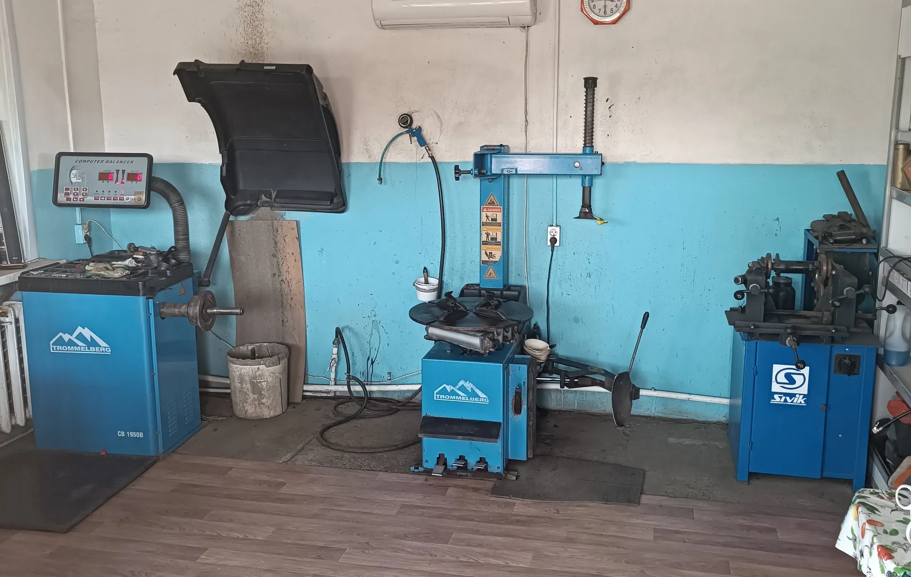
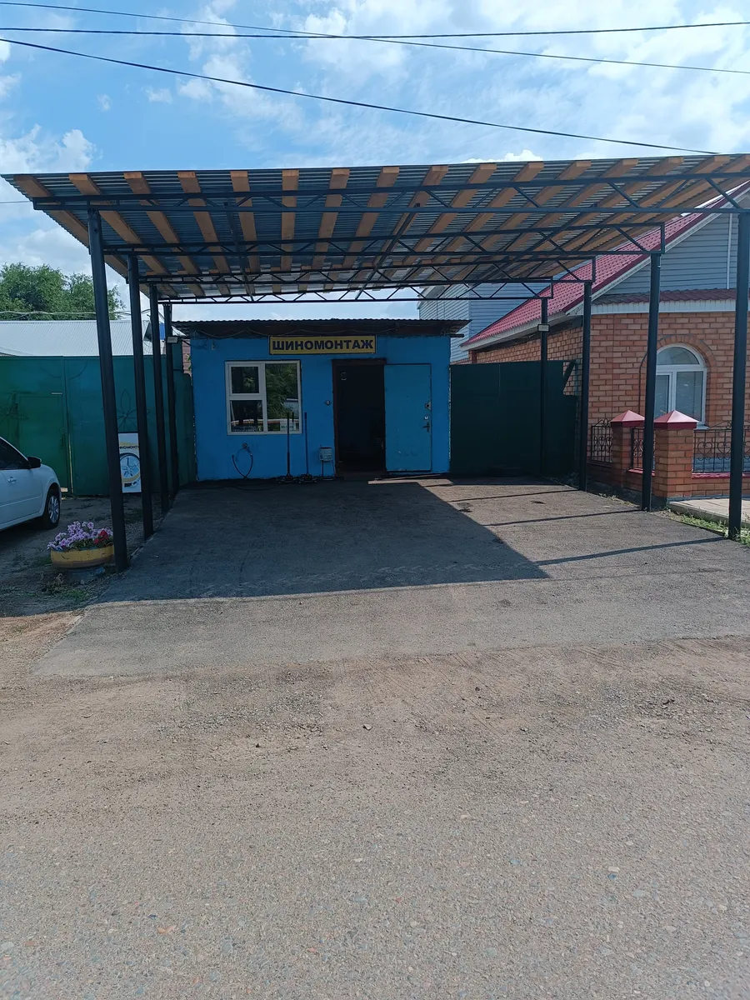
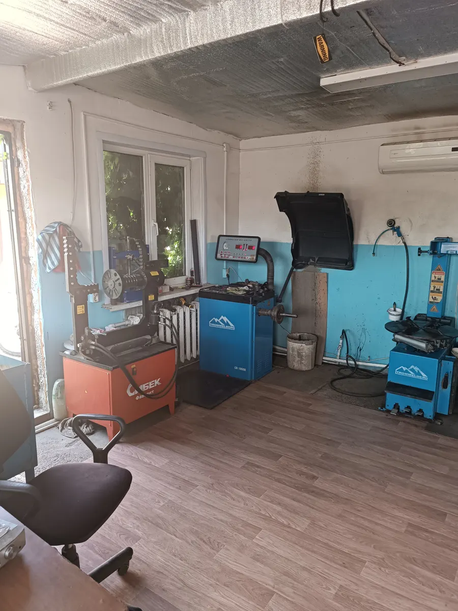
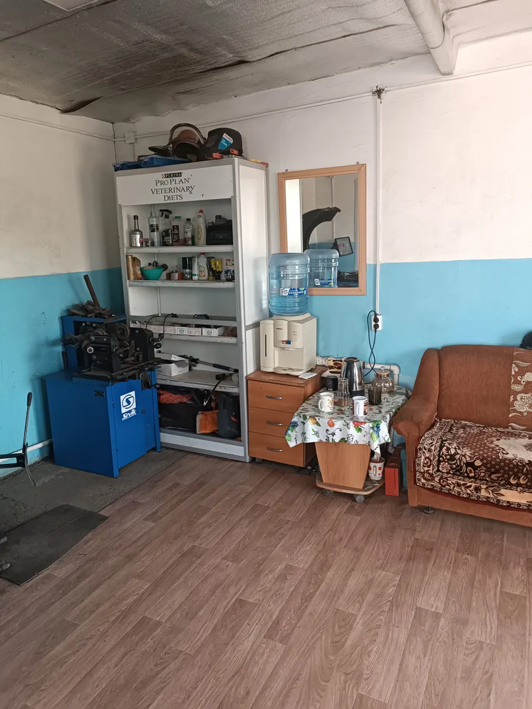

Шиномонтаж · Оренбург
Шиномонтаж в Оренбурге: ждёте в тёплом боксе
Николая Островского, 78. Переобувка, балансировка, ремонт проколов и дошиповка – выберите услугу и время прямо здесь.
- Каждый день 08:00–20:00
- Тёплый бокс для ожидания
- Можно оплатить картой

Услуги и цены
Стоимость зависит от радиуса и машины – назовём её до приезда по телефону или в WhatsApp.
Работы
- Переобувка комплектаснять, перебортировать, поставитьуточнить
- Балансировкауточнить
- Ремонт проколауточнить
- Дошиповкауточнить
- Правка дисковуточнить
Как записаться
- 01
Выберите услугу, день и время
В форме наверху страницы.
- 02
Отправьте запись в WhatsApp
Текст соберётся сам, останется нажать «Отправить».
- 03
Приезжайте на Николая Островского, 78
К выбранному времени, каждый день с 8 до 20.



Почему к нам едут
Быстро и без нервов
Колесо или переобувка – без долгого ожидания.
Тёплый бокс для ожидания
Пока меняют колёса, можно подождать в тепле.
Объясним, что с колесом
Покажем и подскажем, что нужно сделать.
Оплата картой
Принимаем банковские карты.
Отзывы с Яндекс.Карт
«Очень быстрый сервис, за двадцать минут комплекс шиномонтажа R19. Рекомендую»
Ерсай Муканов · 27 марта 2025
«Переобувал колеса, заехал в 19:30, уехал 19:35, ребята работают качественно, быстро и без нервов Цена адекватная, респект бесконечный»
Женя К. · 17 ноября 2025
«Отличный шиномонтаж 👍 Расположенние удобное. Цены доступные. Отбалансировали колёса и "Переобули" машину очень быстро. Парни знают своё дело, хорошие ребята.»
Ольга · 12 мая 2024
Отзывы с карточки на Яндекс.Картах, без правок.
Частые вопросы
Нужно записываться заранее?
Лучше написать заранее – тогда не придётся ждать в очереди.
Сколько стоит переобувка?
Зависит от радиуса и машины. Позвоните или напишите в WhatsApp – назовём цену до приезда.
Делаете дошиповку и правку дисков?
Да. Стоимость уточните по телефону.
Где вы находитесь?
Улица Николая Островского, 78. Работаем каждый день с 8 до 20.
Запишитесь к своему времени
- Адрес
- улица Николая Островского, 78, Оренбург
- Часы
- Каждый день 08:00–20:00
- Телефон
- +7 (922) 886-39-89